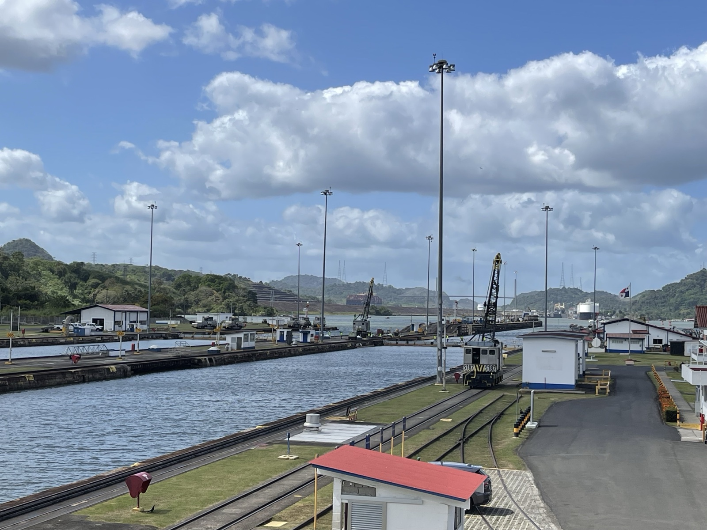
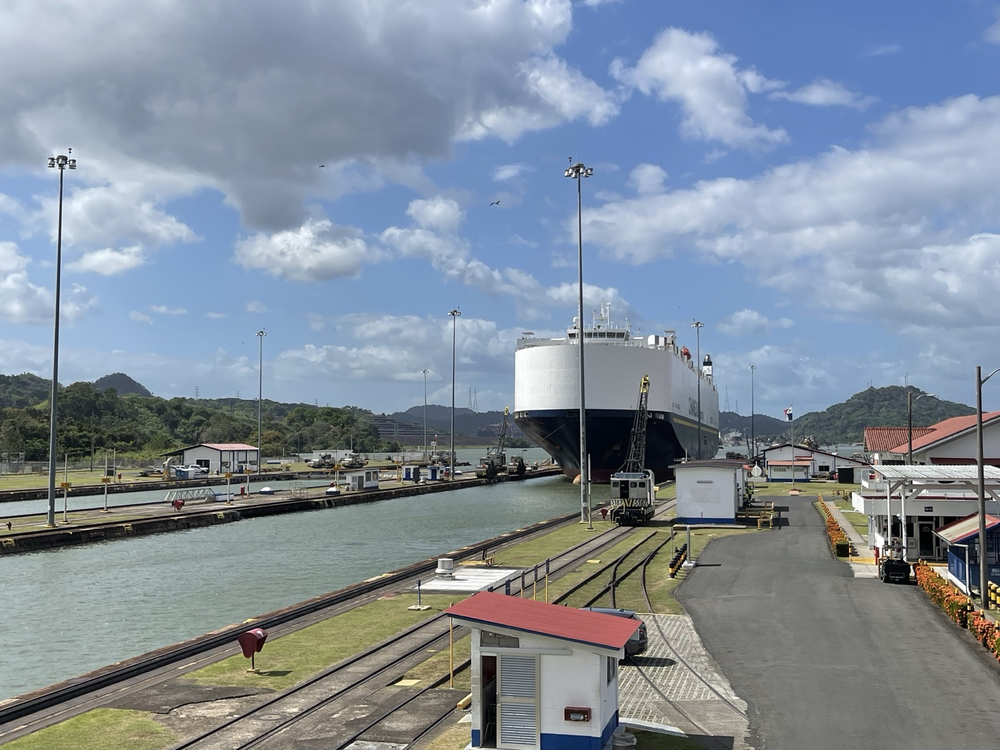
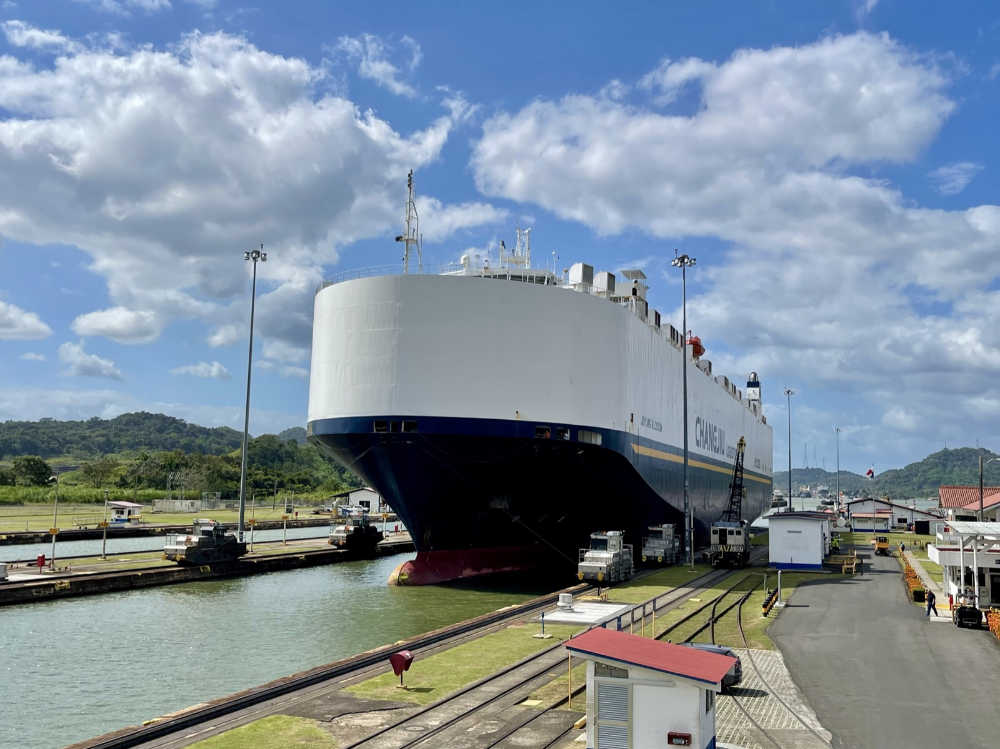
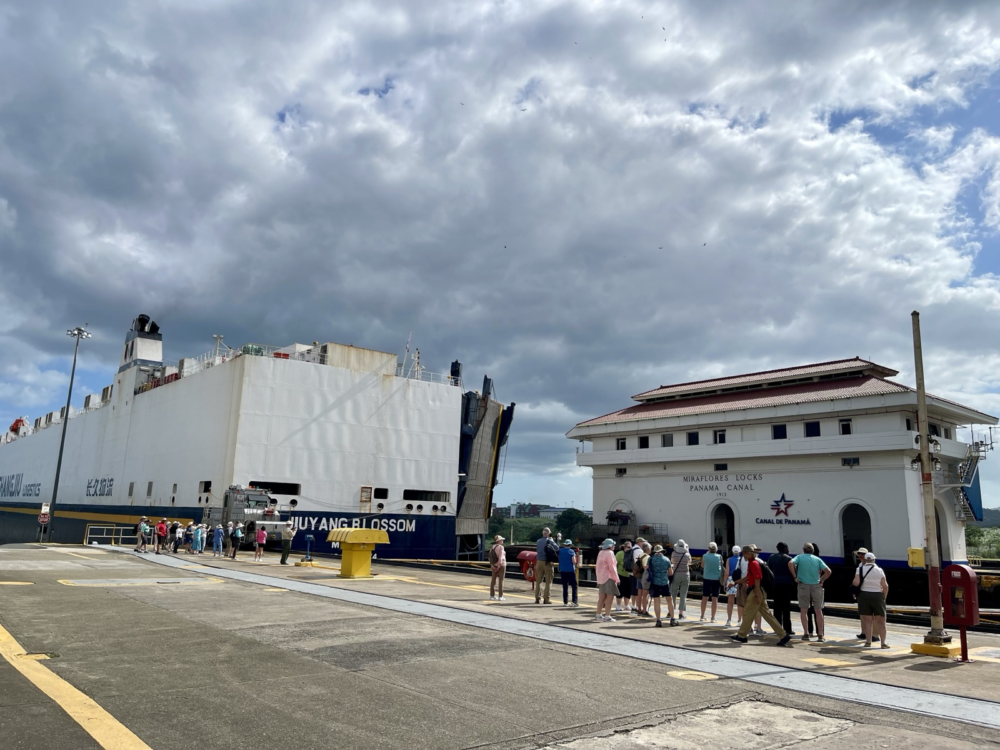

パナマに来たからには、運河を通る船を見たい。ただ運河があるのを知っているだけでは物足りなくて、実際に船が通過する瞬間を自分の目で見たかった。
事前に調べると、パナマ運河公式サイト（visitcanaldepanama.com）に「¿A qué hora pasan los barcos?（船は何時に通る？）」というページがある。ミラフローレス閘門は午前中と午後に分かれていて、午後の便は14:05以降に通過する。この情報をもとに午後に向かった。
ミラフローレス閘門へ
パナマ運河のミラフローレス閘門（Miraflores Locks）はパナマシティから車で15〜20分ほどの場所にある。太平洋側の閘門で、船が水位を段階的に調整しながら通過する仕組みが間近で見られる見学施設がある。
入場料は非居住者で一人17.22バルボア（米ドル相当）。閘門を見渡せる見学デッキに上がり、しばらく待った。
空の閘門と電気機関車
最初は閘門が空だった。水が張られた長方形の水路だけがある。レール上を走る黄色い小さな機関車（ミュールと呼ばれる電気機関車）が行き来しているのが見えた。船が来たときに係留ロープを引っ張って船をコントロールするための車両だ。

JIUYANG BLOSSOM が入ってきた
しばらく待っていると、遠くから白い船体が見えてきた。自動車運搬船「JIUYANG BLOSSOM」だ。中国の物流会社が運航する大型のRoRo船（車両を積んで走る船）で、箱のような白い船体が閘門の幅いっぱいに収まりながらゆっくりと入ってきた。


見学デッキから見ると、船の大きさに圧倒された。閘門の壁と船側面の隙間がほとんどない。あれほど巨大なものを、センチ単位の精度でコントロールしているのかと思うと、その技術がただごとではない。

船が閘門に入ってきた瞬間、デッキ上の観光客から一斉にカメラが向けられた。写真を撮りながら、「これが見たかった」と思っていた。パナマ運河はニュースや教科書で何度も見たけれど、実物はスケールが違う。